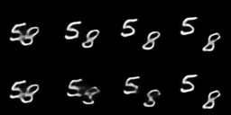

scikit-image graphs & Unsupervised learning with videos
- by Vighnesh Birodkar
About Me
- 2nd year Master's student at NYU Courant studying Computer Science
- Have always been interested in computer vision.
- Open source contributor for scikit-image and scikit-learn .
- Currently Research Assistant with Prof. Davi Geiger at Courant.
Blog : https://vcansimplify.wordpress.com/
Website: http://vighneshbirodkar.github.io/

Marvin Minsky, Co-founder of MIT's AI Lab
In the 60s, Marvin Minsky assigned a couple of undergrads to spend the summer programming a computer to use a camera to identify objects in a scene. He figured they'd have the problem solved by the end of the summer. Half a century later, we're still working on it. [https://www.xkcd.com/1425/]
Region Adjacency Graphs (RAGs)
For scikit-image
My Summer Project.
Background
- It's the summer of 2014. I had recently finished my graduation.
- Recently accepted into the GSoC program for scikit-image.
- Mentored by Stéfan Van Der Walt and Juan Nunez-Iglesias
Over-segmentation
The Goal
Create a Region Adjacency Graph and leverage it for a better segmentation.
Data structure choices
- Should handle graphs in ND images. In a 3D segmented image you could have close to 100,000 nodes.
- This ruled out dense representations like adjacency matrix.
- We evaluated 4 choices, using Networkx(NX), List of Lists (LIL), Scipy's CSR matrix (CSR), and our own implementation (Custom) which used a list of dictionaries
- To simulate a typical use case we built a RAG of 3 images and randomly merged nodes till only 10 nodes are left.
Time Usage
Memory Usage
Conclusion
- Finalized using networkx library.
- Would allow using their existing graph manipulation routines.
- Pure python, hence no problem having it as a dependency.
- Created the RAG class inside skimage which inherits from networkx.Graph
Example - Input Image
Example - Initial Segmentation
Code - Contruction
img = io.imread('car.jpg')
labels = segmentation.slic(img, compactness=30, n_segments=400)
g = graph.rag_mean_color(img, labels)
out = graph.draw_rag(labels, g, img)
Example - RAG
Example - Thresholding
labels_new = graph.cut_threshold(labels, g, 30)
Images and graph cut
- If similar regions have high edge weights, it seems natural that a minimum cut remove low weight edges preserve regions.
- However
Normalized Cut
For a graph V. $$ \ \\ NCut(A, B) = \frac{cut(A, B)}{Assoc(A, V)} + \frac{cut(A, B)}{Assoc(B, V)}\\ cut(A, B) = \sum\limits_{a \in A, b \in B} w(a, b)\\ Assoc(X, V) = \sum\limits_{x \in X, v\in V } w(x, v) $$Normalized Cut
Example - NCut
graph.rag_mean_color(img, labels, mode='similarity')
labels_new = graph.cut_normalized(labels, g)
NCut - Video
NCut - Image

NCut - Video
Hierarchical Merging
- Repeatedly group similar adjacent regions until there are no adjacent regions which are similar enough.
- Implemented in scikit-image via 2 callbacks.
Weight callback
def _weight_mean_color(graph, src, dst, n):
"""Callback to handle merging nodes by recomputing mean color.
The method expects that the mean color of `dst` is already computed.
Parameters
----------
graph : RAG
The graph under consideration.
src, dst : int
The vertices in `graph` to be merged.
n : int
A neighbor of `src` or `dst` or both.
Returns
-------
data : dict
A dictionary with the `"weight"` attribute set as the absolute
difference of the mean color between node `dst` and `n`.
"""
diff = graph.node[dst]['mean color'] - graph.node[n]['mean color']
diff = np.linalg.norm(diff)
return {'weight': diff}
Merge callback
def merge_mean_color(graph, src, dst):
"""Callback called before merging two nodes of a mean color distance graph.
This method computes the mean color of `dst`.
Parameters
----------
graph : RAG
The graph under consideration.
src, dst : int
The vertices in `graph` to be merged.
"""
graph.node[dst]['total color'] += graph.node[src]['total color']
graph.node[dst]['pixel count'] += graph.node[src]['pixel count']
graph.node[dst]['mean color'] = (graph.node[dst]['total color'] /
Example - Hierarchical Merging
labels_new = graph.merge_hierarchical(labels, g, thresh=35, rag_copy=False,
in_place_merge=True, merge_func=merge_mean_color,
weight_func=_weight_mean_color)
Hierarchical Merging - Video
Region Boundary RAGs
- Use an energy map from the user, typically an edge map
- The edge weight between 2 regions is the average value of the energy map along their shared boundary.
Example - Region Boundary RAG
edges = filters.sobel(gray_img)
g = graph.rag_boundary(labels, edges)
Region Boundary RAG callbacks
def weight_boundary(graph, src, dst, n):
"""
Handle merging of nodes of a region boundary region adjacency graph.
This function computes the `"weight"` and the count `"count"`
attributes of the edge between `n` and the node formed after
merging `src` and `dst`.
Parameters
----------
graph : RAG
The graph under consideration.
src, dst : int
The vertices in `graph` to be merged.
n : int
A neighbor of `src` or `dst` or both.
Returns
-------
data : dict
A dictionary with the "weight" and "count" attributes to be
assigned for the merged node.
"""
default = {'weight': 0.0, 'count': 0}
count_src = graph[src].get(n, default)['count']
count_dst = graph[dst].get(n, default)['count']
weight_src = graph[src].get(n, default)['weight']
weight_dst = graph[dst].get(n, default)['weight']
count = count_src + count_dst
return {
'count': count,
'weight': (count_src * weight_src + count_dst * weight_dst)/count
}
def merge_boundary(graph, src, dst):
"""Call back called before merging 2 nodes.
In this case we don't need to do any computation here.
"""
pass
Example - Boundary Merge
labels2 = graph.merge_hierarchical(labels, g, thresh=0.1, rag_copy=False,
in_place_merge=True, merge_func=merge_boundary,
weight_func=weight_boundary)
Summary
- skimage.future.graph provides APIs to construct and manimulate n-dimensional region adjacency graphs.
- Well documented and hackable.
- Useful for pre-processing while training ConvNets.
- More details about my summer project On my blog
Unsupervised learning in videos
Research Assistantship during Fall 2016 with Prof. Davi Geiger.
[Work in progress]
Our understanding of motion.
- Humans understand motion really well.
- We are able to anticipate motion, infer trajectories and react to motion very quickly.
- Most of our learning about motion comes in an unsupervised setting.
- We think that humans are able to map motion to a linear space to be able to interpolate and extrapolate so well.
Compression
Knowledge about the domain is extremely essential for good compression.Rather than specifying 640 x 480 pixels, humans would describe the picture as "Red Ford GT sports car with yellow stripes parked on a road with trees in the background."
Autoencoders
Given input image $X$, Encoder $E$ and Decoder $D$, we have $$ z = E(X)\\ D(z) \approx X $$ Typically $size(z) << size(X)$. If the model is able to successfully achieve its objective, it would have gained some knowledge about the domain, specifically images.Our approach
- Encode and decode frames trough time minimizing reconstruction error.
- Force the latent vectors of frames to be linear through.
- One way to encourage linearity is cosine distance.

Cost function
Given sequence of frames $X_1, X_2, \ldots X_n$ $$ \mathcal{L} = \sum\limits_{i=1}^N \lVert D(E(X_i)) - X_i \rVert_2^2 - \sum\limits_{i=2}^{n-1} d_{\mathrm{cosine}}\mid (X_i - X_1, X_n - X_1) \mid\\ d_{\mathrm{cosine}}(a, b) = \frac{a \cdot b}{\lVert a\rVert_2 \lVert b\rVert_2} $$Results so far
No penalty

Cosine distance penalty
No penalty
Cosine distance penalty
No penalty
Cosine distance penalty

No penalty

Cosine distance penalty

Possible improvements
- MSE leads to blurry predictions in multi-modal distributions. An adversarial penalty could be used to address this.
- The assumption fails when there is a change of scene in a video. Possibly avoid by pre-processing.